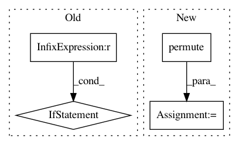

41a3e20440c61f4892d7731f89032b53932cce66,src/solver.py,Trainer,exec,#Trainer#,111
Before Change
self.write_log("wer",{"tr_att":cal_er(self.tokenizer,att_output,txt),
"tr_ctc":cal_er(self.tokenizer,ctc_output,txt)})
// Validation
if self.step%self.valid_step == 0:
self.validate()
// End of step
self.step+=1
if self.step > self.max_step:break
After Change
total_loss = 0
if ctc_output is not None:
if self.paras.ctc_backend =="cudnn":
ctc_loss = self.ctc_loss(ctc_output.permute(1,0,2).contiguous(),
txt.to_sparse().values().to(device=self.device,dtype=torch.int32),
encode_len.to(device=self.device,dtype=torch.int32),
txt_len.to(device=self.device,dtype=torch.int32))
else:
ctc_loss = self.ctc_loss(ctc_output.permute(1,0,2).contiguous(), txt, encode_len, txt_len)
total_loss += ctc_loss*self.asr_model.ctc_weight
if att_output is not None:
In pattern: SUPERPATTERN
Frequency: 3
Non-data size: 4
Instances
Project Name: Alexander-H-Liu/End-to-end-ASR-Pytorch
Commit Name: 41a3e20440c61f4892d7731f89032b53932cce66
Time: 2019-08-14
Author: alexliu36@gmail.com
File Name: src/solver.py
Class Name: Trainer
Method Name: exec
Project Name: cornellius-gp/gpytorch
Commit Name: 3879bcde8d42c619c96b6483dba14a76a8e5f00b
Time: 2019-09-29
Author: kaw293@cornell.edu
File Name: gpytorch/utils/grid.py
Class Name:
Method Name: create_data_from_grid
Project Name: lanpa/tensorboardX
Commit Name: 38e284c453bcdad445b300c832ec543f5a0e691e
Time: 2017-06-23
Author: huang.dexter@gmail.com
File Name: tensorboard/summary.py
Class Name:
Method Name: image